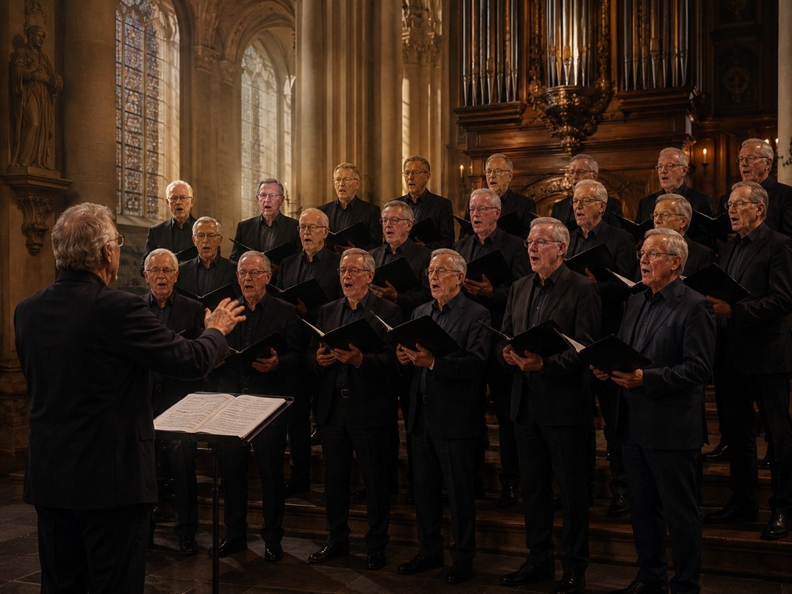
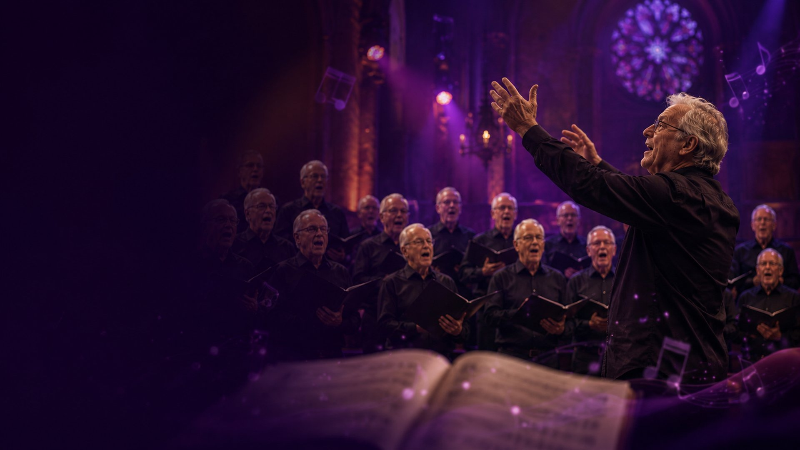
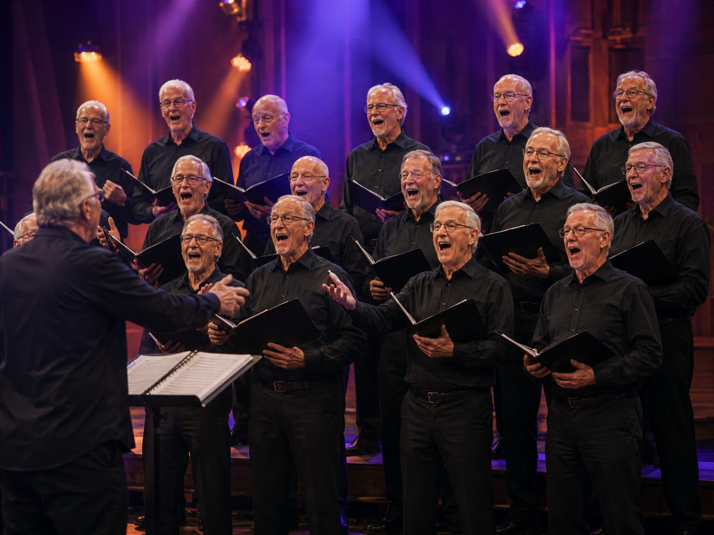
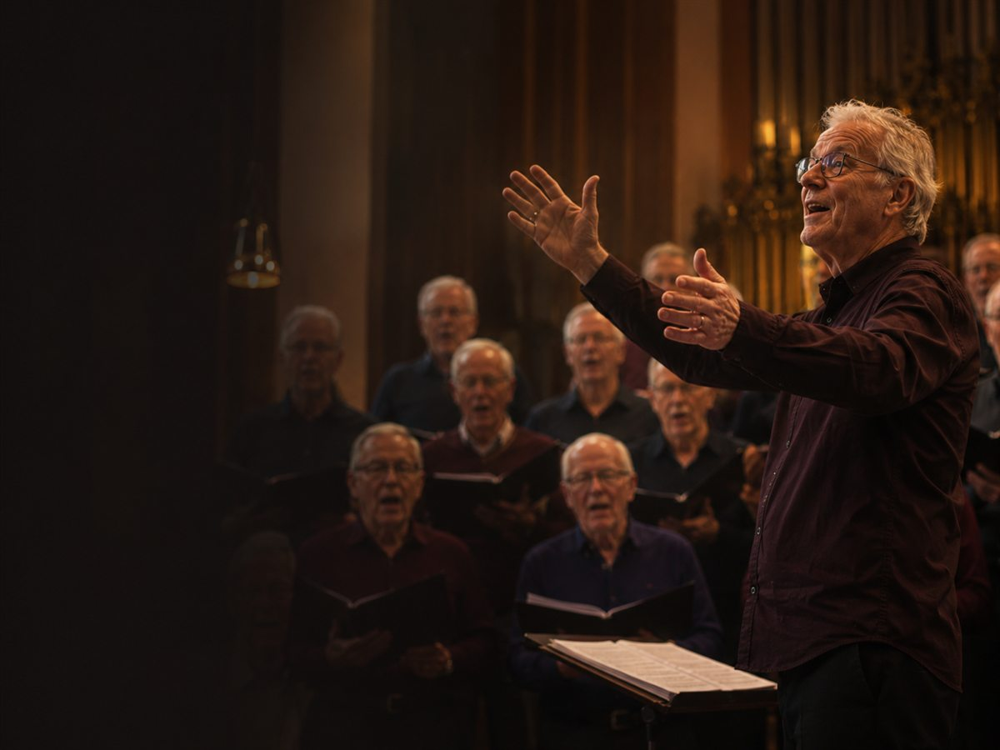

01
Krachtig en klassiek
Van monumentaal tot intiem en verstild.
- [TEST] The Rose
- [TEST] The Sound of Silence
- [TEST] Nunc dimittis


Verhalen die we samen tot leven zingen.
Verhaal
Een ode aan liefde en hoop. Ontdek de muzikale reis die ieder lied bij Spontaan aflegt.
Diverse stijlen, één doel: samen verhalen tot leven brengen.
Van monumentaal tot intiem en verstild.

Dichtbij en herkenbaar, met ruimte voor een glimlach.
Opzwepende klanken vol energie om mee te vieren.

Ontdek deze greep uit ons repertoire.
Van eerste noot tot uitvoering op het podium.
“Een lied krijgt pas betekenis wanneer we het samen vertellen.”

Kom luisteren tijdens een repetitie.